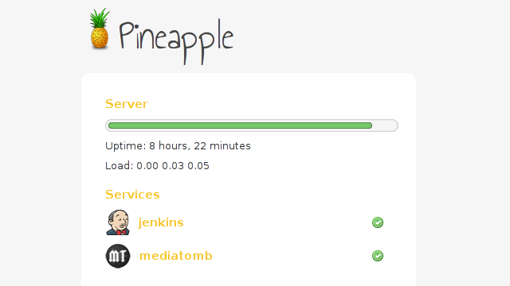

Robert Chmielowiec
Teerace
is a new ranking site for Teeworlds racing. Complete with automatic scoring system, rankings and awards it’s the place where all good racers come to compete.
Krzysztof Socha
homepage design.

New design of
Pineapple
server status page.
Przemysław Ćwikła
's personal website.